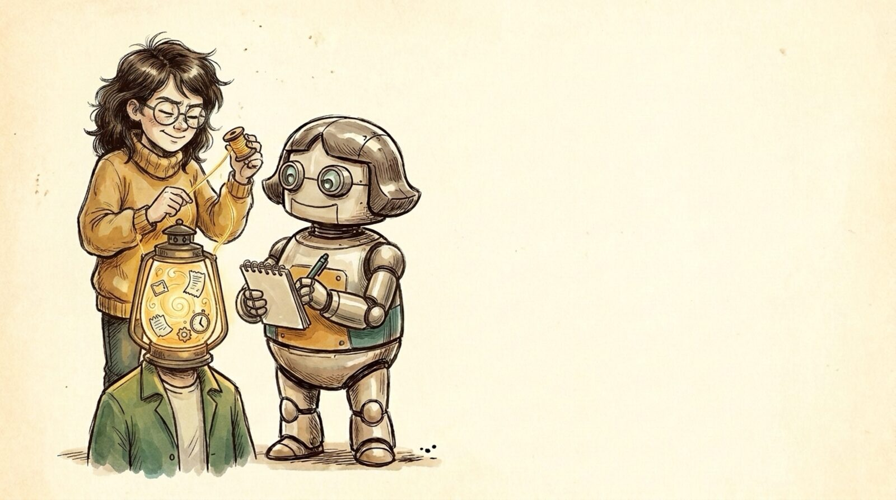

<section id="p11" data-transition="fade" style="background:#f5eee0">
  
  <h1 id="p7c273f19975br0-43de34d7" style="position:absolute; top:481.75px; left:1043.55px; width:1920px; font-family:Arial, sans-serif; font-size:64px; font-weight:700; line-height:1.1; color:#222222">Users hold the context</h1>
  <aside>Unchanged #2: internal and external users know things the builders don't. Acquiring that context is expensive and slow: it moves at human speed.</aside>
</section>
